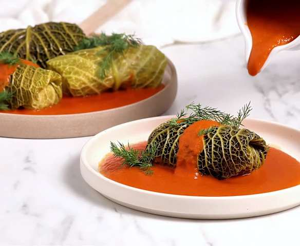

Zutaten
- 1 großer Weißkohl oder Wirsing
- 500g gemischtes Hackfleisch
- 1 Zwiebel
- 100g Reis
- 1 Ei
- Salz und Pfeffer
- 3 EL Tomatenmark
- 500ml Gemüsebrühe
Zubereitung
- Kohlblätter vorsichtig ablösen und in Salzwasser ca. 5 Minuten blanchieren.
- Reis kochen.
- Zwiebel würfeln und in etwas Öl anbraten.
- Hackfleisch, Reis, Ei, Zwiebel, Salz und Pfeffer vermischen.
- Füllung auf die Kohlblätter geben, einrollen und evtl. mit Küchengarn fixieren.
- Gołąbki in einen Bräter legen.
- Tomatenmark und Gemüsebrühe verrühren und über die Rouladen gießen.
- Im vorgeheizten Ofen bei 175°C ca. 60-90 Minuten schmoren.
Fertiges Gericht

Ein Teller mit dampfenden, hausgemachten Gołąbki.